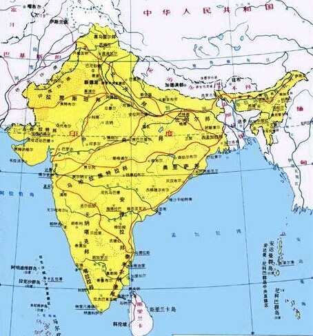

- 印度国旗
- 印度国徽
- 印度标志性建筑
- 印度地理位置
印度概况
印度位于亚洲南部
人口概况
12.0310亿(2011年中国新华网)。印度斯坦族占46.3%, 泰卢固族8.6%, 孟加拉族7.7%, 马拉地族7.6%, 泰米尔族7.4%, 古吉拉特族4.6%, 坎拿达族3.9%, 马拉雅拉姆族3.9%, 奥里雅族3.8%, 旁遮普族2.3%。英语和印地语同为官方语言。约有82%的居民信奉印度教, 其次为伊斯兰教(12%)、基督教(2.3%)、锡克教(1.9%)、佛教(0.8%)和耆那教(0.4%)等。
印度经济
印度独立后经济有较大发展。农业由严重缺粮到基本自给，工业形成较为完整的体系，自给能力较强。但是20世纪90年代之前，印度实行国家大规模干涉经济政策，反而导致经济发展缓慢。20世纪90年代，经济改革之后，印度服务业发展迅速，占GDP比重逐年上升。印度已成为全球软件、金融等服务业重要出口国。
印于1991年7月开始实行全面经济改革，放松对工业、外贸和金融部门的管制。1992年至1996年实现经济年均增长6.2%。“九五”计划（1997年至2002年）期间经济年均增长5.5%。1999年起实行第二阶段经济改革。2001年，出台“十五”计划（2002年至2007年），深化第二阶段经济改革，加速国有企业私有化，实行包括农产品在内的部分生活必需品销售自由化，改善投资环境，精简政府机构，削减财政赤字。
主要工业包括纺织、食品加工、化工、制药、钢铁、水泥、石油和机械等。汽车、电子产品制造、航空和空间等新兴工业发展迅速。印度谋求成为“技术制造业中心”。
印度矿产资源丰富, 铝土储量和煤产量均占世界第五位, 云母出口量占世界出口量的60%。截至1996年底, 印度主要资源可采储量估计为:煤463.89亿吨(不含焦煤), 铁矿石97.54亿吨, 铝土22.53亿吨, 铬铁矿1.24亿吨, 锰矿石6550万吨, 锌589万吨, 铜352万吨, 铅136万吨, 石灰石684.77亿吨, 磷酸盐8100万吨, 黄金86吨, 石油8.96亿吨, 天然气6970亿立方米。此外, 还有云母、石膏、钻石及钛、钍、铀等矿藏。森林覆盖率为21.9%。
外交关系
印度为不结盟运动创始国之一, 历届政府均强调不结盟是其外交政策的基础, 力争在地区和国际事务中发挥重要作用。冷战结束后, 印政府调整了过去长期奉行的倾向苏联的大国平衡政策, 推行全方位务实外交。
经贸往来
主要出口商品为：制成品主要包括纺织品、珠宝、机械产品、化工产品、皮革、手工艺品等；初级产品主要包括农产品和矿产品；石油类产品主要包括成品油、原油和石油产品等。
主要进口商品为：石油产品，电子产品，金银，机械，化工产品。
美国是第一大贸易伙伴。中国居第二位。其他主要贸易伙伴包括德国、阿联酋、沙特、新加坡、英国、瑞士、法国、伊朗、日本、中国香港等。[